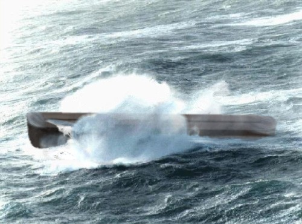

 |
Noah's Ark crests a 10m wave in high seas. (2500BC) Image Tim Lovett 2004 |
Genesis 6:15 explicitly states the proportions of Noah'sArk; 300 x 50 x 30 cubits. The vessel is six times as long as it is wide, an L/B ratio of 6.
A typical modern ship might have L/B of 6 to 8, and up to 10 for a narrow, high speed vessel. But these are designed to travel forwards, whereas Noah's Ark simply had to float, so one would think.
Hong's hull#9
Hong's seakeeping analysis assumes a confused sea. "...the waves came from all directions with the same probability."
Their results show that Noah's Ark does not have unbeatable proportions for a random sea. In fact, according to their own numbers, there is no weighting scheme that can put Noah's Ark ahead of hull#9, and in most cases hull#10 also. In terms of roll stability, it is hull#9 that deserves the title as "the most stable design".
Why is hull 9 consistently superior? It outperforms Noah's Ark in both stability and hull strength, which means that it could ride bigger waves and it would be easier to build. Considering that these are the usual objections to the construction of the Ark (couldn't handle the waves, too hard to make), it seems surprising that the ark does not appear to be optimized on these issues alone.
The Biblical proportions are clearly adequate, Noah's Ark consistently ranks near the top in almost any weighting scheme and never below 7th place (pure seakeeping). But the extra effort required to build the longer hull seems surprising. There is certainly a lot less wood in hull 9. (In reality even more exaggerated because space is lost to the extra wood). In most cases, hull 10 is also ahead of the Biblical Ark.
Even the optimal weighting of seakeeping (3.88), strength (3.11) and roll (0.289) cannot bring Noah's Ark out on top. From this information one would think the ark should have been a little shorter. After all, lifeboats aren't so long and narrow.
, at least when interpreted as a near rectangular box. consistently in In Genesis speaks of a wind sent to dry the earth - a global scale wind without interference from landforms. A consistent wind of unlimited fetch would generate mature waves, having long wavelengths and probably all in the same direction - at least from the Ark's perspective. In such a case a longer vessel is better, provided it doesn't end up broaching (going side-on to the waves).
The proportions God chose for Noah's Ark indicate that the waves did not come equally from all directions, but had a dominant heading. The length of the ark is beyond the optimum for a confused sea, which compromises roll stability. However, by keeping a course with the wind the ark would easily outperform the shorter hulls 9 and 10 of the Hong study. Ask any mariner - ships aren't supposed to go side-on to the waves.
The most accurate way to gauge the conditions of the flood is to look at the specifications of Noah's Ark. If the water was very calm it could have been lower - maybe 2 decks which is easier. If the seas were confused it should have been shorter. To some extent Noah's Ark appears to have been designed for large wind generated waves traveling almost uni-directionally with respect to the ark. However it still has a wide enough base to handle some weather from other directions - and a smaller confused sea.
Since the ark "moved about on the surface of the waters", wind is considered to be the most significant factor. See Waves.
, 8:1 and tesome CASE WAVES (Wind Generated Rogue Waves)
Tsunamis are not likely be a threat to Noah's Ark. In fact most ships can't even detect a passing tsunami (tidal wave) in deep water. For more information see Waves.
Late in the voyage God sent a wind, apparently part of the drying mechanism (or a result of it). The height of a wave is a function of wind speed, provided there is enough time and sufficient fetch for the wind to act on the water surface. A global flood gives unlimited fetch so the size of the waves is controlled by the airstream - a constant direction at high velocity producing mountainous conditions. While wind speed might be difficult to estimate the hull gives a clue. Engineers and naval architects at the world class Korean research center KRISO analyzed the vessel in a landmark 1994 paper, resulting in an extraordinary navigation limit of 47m (154 ft) waves. This is not a strength threshold, but a stability limit based on recognized wave spectra for amplitude and wavelength. Such waves have never been measured, but extrapolation of known wave data would give waves well in excess of the length of the ark. These waves pose little threat since the ark would ride over with the wave.
Hull Length Waves
The critical waves are not the largest, but the ones that match the length of the hull. This gives the maximum hogging and sagging conditions, as well as pronounced pitching and slamming when the bow or stern becomes air-born.
Rogue Waves
The impact of an extreme wave can produce far higher loads than are normally considered. This has serious design implications, including far higher roof strength, extremely strong window hatches and projecting upper hull detailing to deflect waves away from the roof.
REFERENCES
1. Ship Design for efficiency and economy: 2nd Ed: H Schneekluth, Butterworth Heinemann Oxford 1998